Добро пожаловать в Вязьму
Город воинской славы, древняя крепость на Смоленской земле. Здесь переплелись вехи истории, от средневековых валов до современных культурных троп.
Изучить достопримечательности🏛️ Достопримечательности Вязьмы

Свято-Троицкий собор
Главный храм города, построен в 1676 году. Пятиглавый собор с уникальным иконостасом.

Иоанно-Предтеченский монастырь
Основан в 1535 году. Один из древнейших монастырей Смоленщины.

Краеведческий музей
Богатая экспозиция: археология, быт, война, история края.

Памятник Перновскому полку
Обелиск в честь победы над армией Наполеона в 1812 году.

Вечный огонь
Мемориал воинской славы, посвящённый героям ВОВ.

Сквер Карла Маркса
Уютный сквер для спокойных прогулок и отдыха.

Церковь Преображения Господня
Старинный храм с красивым иконостасом и колокольней.

Сквер Светланы Савицкой
Большой сквер с МиГ-17. Любимое место горожан.

Набережная реки Вязьмы
Живописная набережная для прогулок.

Сквер Героям Первой Мировой
Мемориал героям Первой мировой войны.

Спасская Башня
Единственная уцелевшая башня из 6, часть крепостного вала.

Городской парк
Центральный парк для отдыха и семейных прогулок.
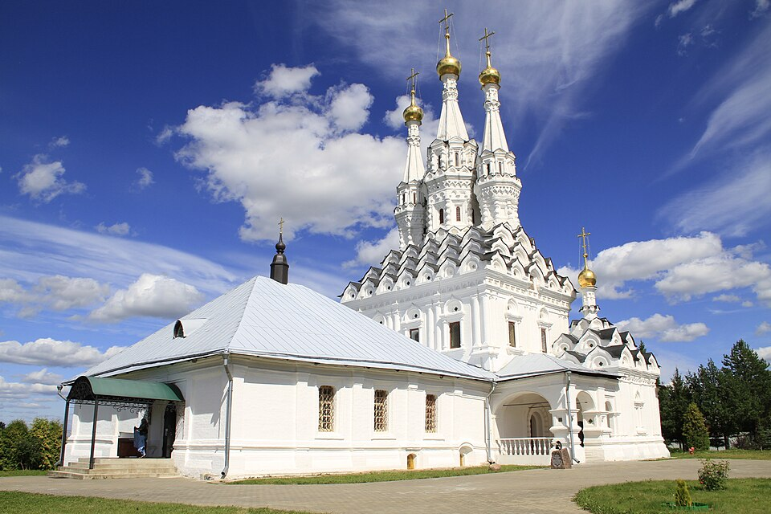
Церковь иконы Божией Матери Одигитрия
Красивая территория, архитектура здания и внутренняя отделка.
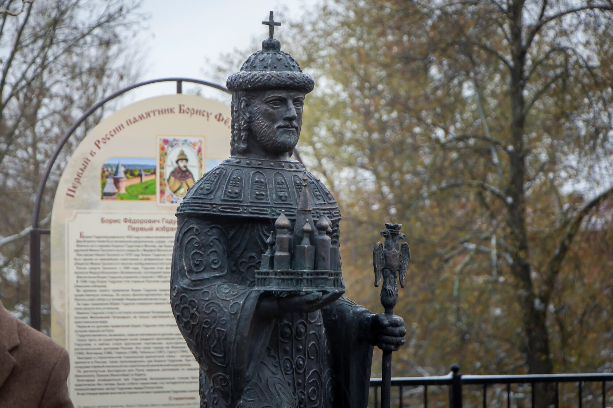
Памятник Борису Годунову
Первый в России памятник Борису Фёдоровичу Годунову
Памятник генерал-лейтенанту Михаилу Ефремову
Памятник Ефремову увековечивает его героический подвиг в боях за Вязьму в октябре 1942 года
📜 История Вязьмы
Первое летописное упоминание города. Передан в удел князю Андрею Владимировичу Долгой Руке, становится центром Вяземского удельного княжества в составе Смоленского княжества.
Захвачена Великим княжеством Литовским.
Возвращена Русскому государству в ходе русско-литовской войны.
Приписана к опричнине при Иване Грозном. Активно развиваются ремёсла (кожевенное производство) и торговля по Старой Смоленской дороге.
Построена каменная крепость с шестью башнями. Сохранилась Спасская башня. Город неоднократно подвергался польским набегам.
Временно становится «столицей» России: из‑за чумы в Москве здесь обосновался царь Алексей Михайлович с семьёй и патриархом Никоном.
Утверждён генеральный план развития города.
Городу присвоен герб.
Расцвет пряничного производства: в 1850 году действовало 8 пряничных фабрик (Сабельниковых, Ечеистовых, Кустаревых). В 1869 году открыта Александровская мужская гимназия — первое земское среднее учебное заведение в стране.
Через Вязьму прошла Московско‑Брестская железная дорога, что дало мощный толчок экономике.
22 октября русские войска нанесли поражение отступающей армии Наполеона. Город частично разрушен и подожжён при отступлении.
«Вяземский котёл»: в ходе оборонительной операции под Вязьмой в окружение попали значительные силы РККА. Город оккупирован немцами 7 октября.
Освобождён в ходе Ржевско‑Вяземской операции. Город сильно разрушен, но позже восстановлен.
Присвоено почётное звание «Город воинской славы» за мужество защитников в годы Великой Отечественной войны.
Вязьма — исторический город воинской славы, важнейший транспортный узел в области и центр культурного туризма.
💡 Интересные факты о Вязьме
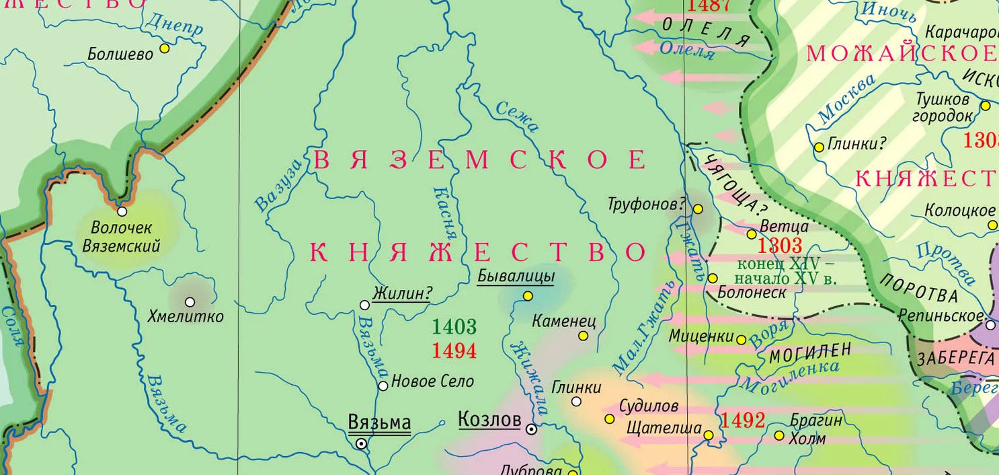
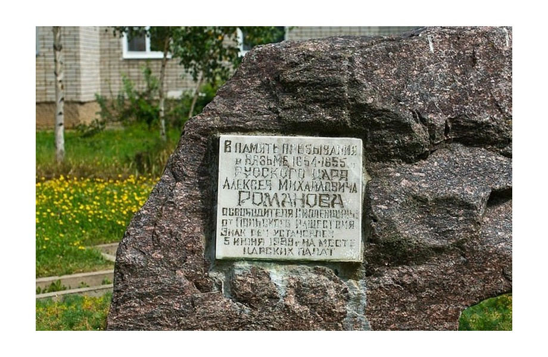
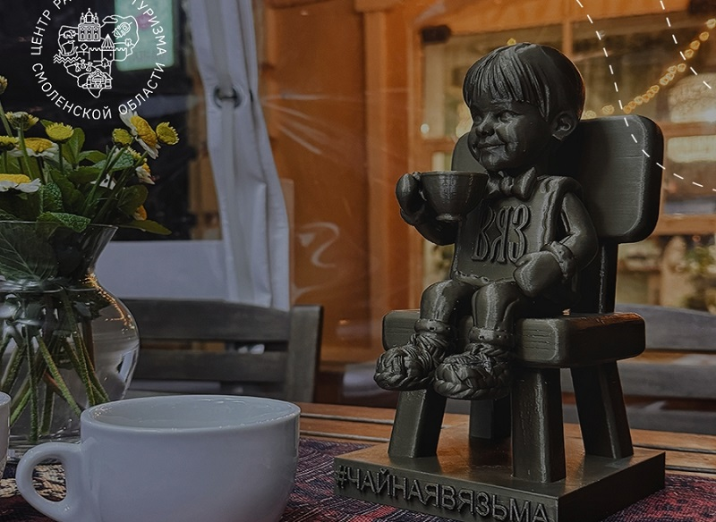
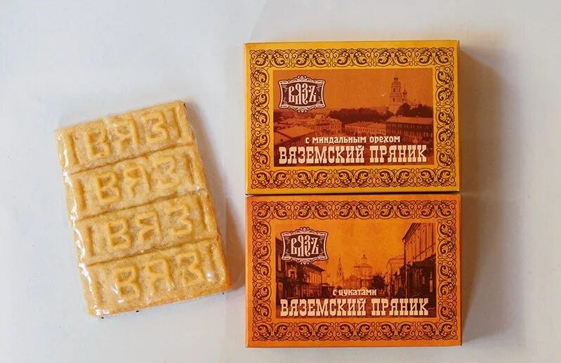
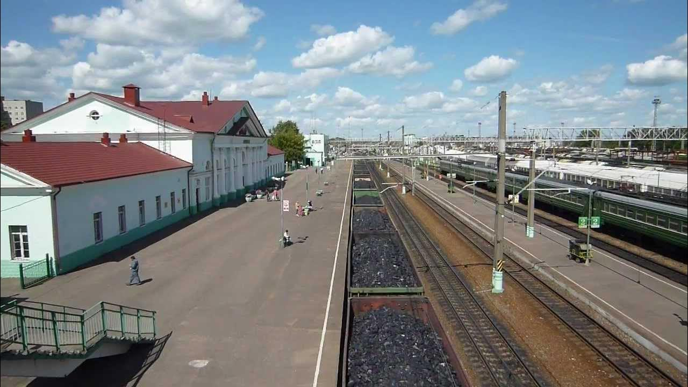
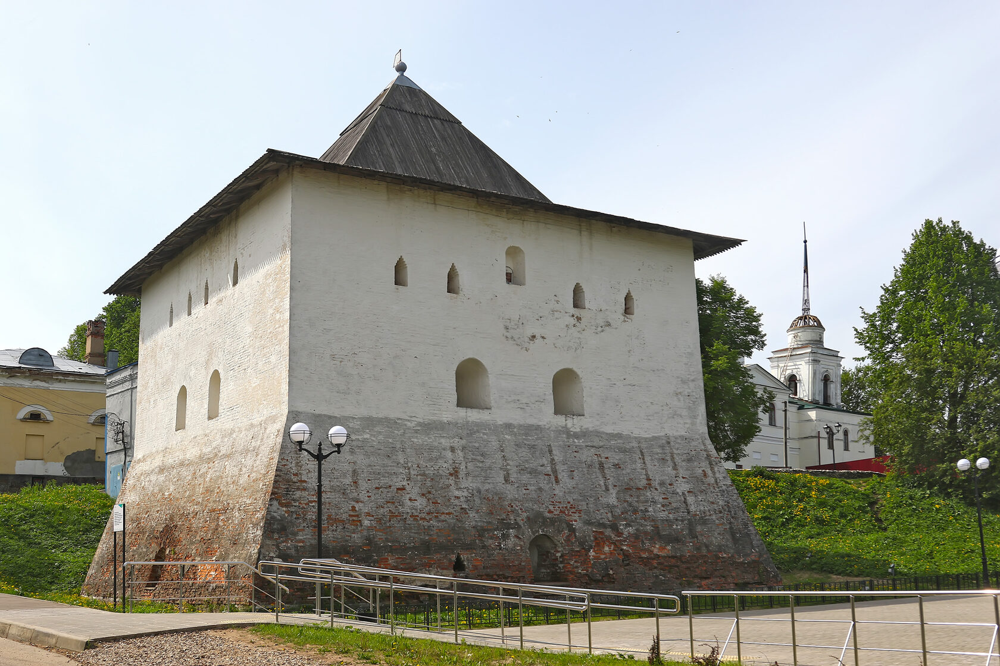
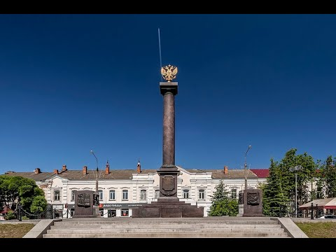
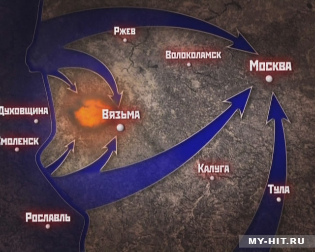
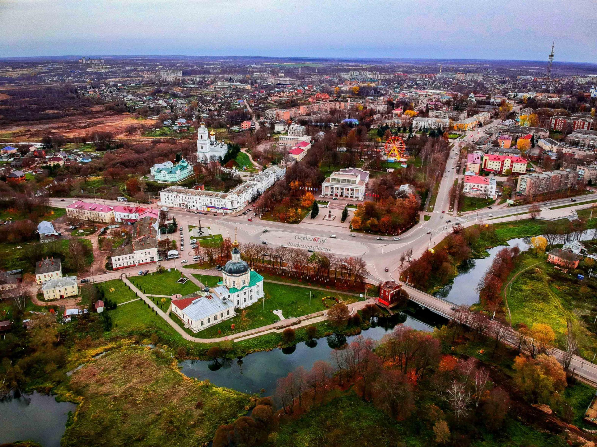
🍴 Где поесть в Вязьме
🍽️ Скоро здесь появится список кафе и ресторанов
Мы собираем информацию о лучших местах Вязьмы.
🎁 Где купить сувениры в Вязьме
🧳 Скоро здесь появятся сувенирные лавки и пряничные магазины
Мы готовим подборку мест, где можно купить вяземский пряник и другие сувениры.
👨💻 Создатели
Команда Кванториума Вязьмы:
Руководитель: Ромашкан Сергей
Программист: Фотиев Виктор
Идеи дизайна: Котова Алиса, Соловьёв Тимофей
Кванториум — это пространство, где мы учимся и создаём будущее.